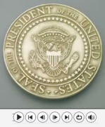

|
|
|
JJK -
The Fulfillment of the Dream
|
|

JJK's
2004 Campaign Video |
Welcome to Democrat, John
Joseph Kennedy's Official 2008
President of the United States
Campaign Website
|
|
John Joseph Kennedy, a true
Democrat, is not owned by any big
corporation, pharmaceutical company,
organization or lobbyist. He is
beholden to no one except God and
the great people of America. This is
his strong suit. He brings
integrity, extraordinary vision,
hard work and a clean slate
to the Oval Office.
It can only be ONE
person who is the Right One for the
JOB - That is John Joseph Kennedy -
The People's President.
Anyone
else as President is going to dig a
deeper hole for the USA and the
world that we may not recover from! |
|
|
|
|
| |
|
JJK -
Latest News |

Jan.
15th '07
JJK
FEC Official Filing 2008
JJK Official Press Release
Announcing Candidacy
Atlanta, Georgia USA-January
15, 2007: Today
JJK announces his candidacy
for President of the United
States in the 2008 U. S.
Presidential election on the
Democratic ticket as "The
People's President".
more
Dec.
23rd '06
JJK Announces Candidacy
“Yes! I am ready, willing
and prepared to serve our
great country and to stand
up for America as I did in
the 2004 Presidential
election for ALL people. I
am running on the Democratic
ticket, as a
true Democrat. There
is a difference. I am
excited and happy by my
decision and ask each of you
for your full support.”
listen
to clip
December
23, 2006
WARL
1320 AM Providence,
R.I.
Dec.
19th '06
Read the petition that the
citizens of the world have
signed to get JJK to run for
President 2008...
here
'04
Campaign
Discover why John stood up
for the USA in 2004...
here
|
USA - Atlanta, Georgia
Contact: Friends of JJK 2008
-
email
Phone:
1-404-920-3267
|
|